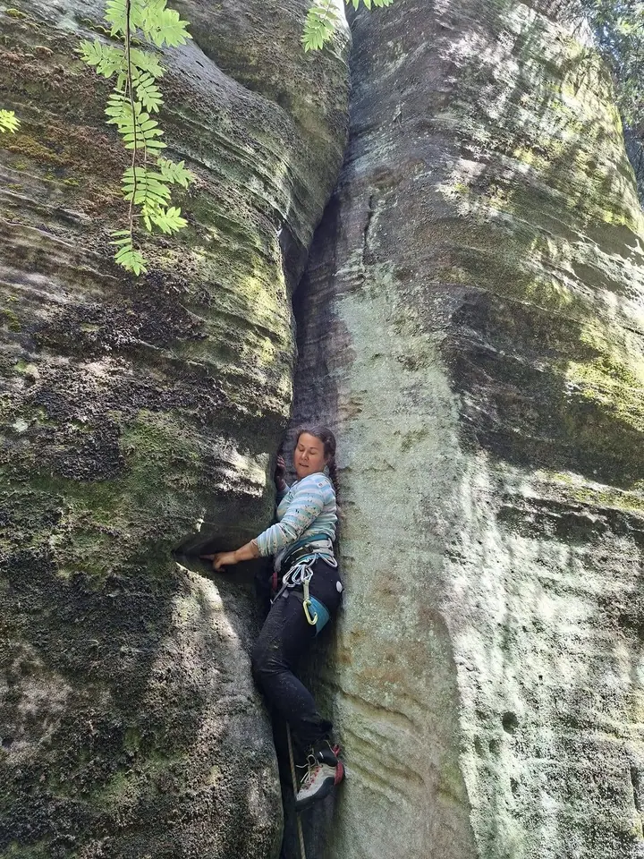
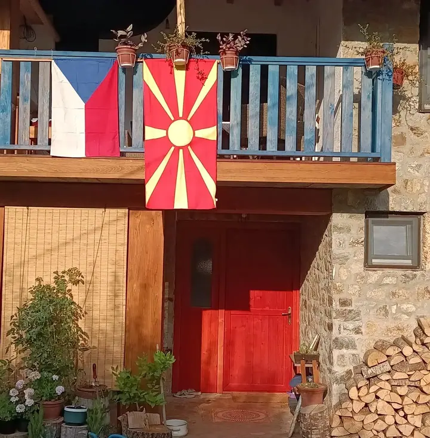
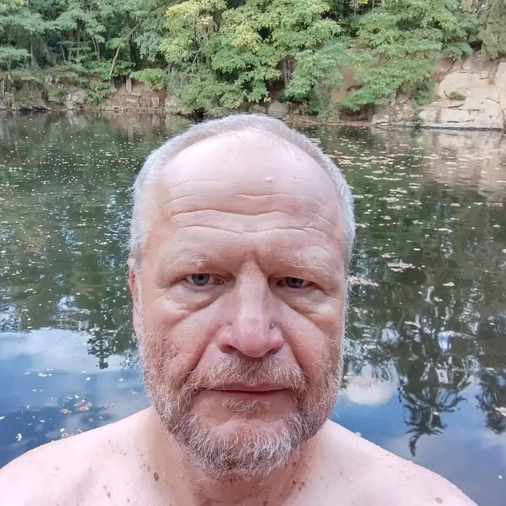
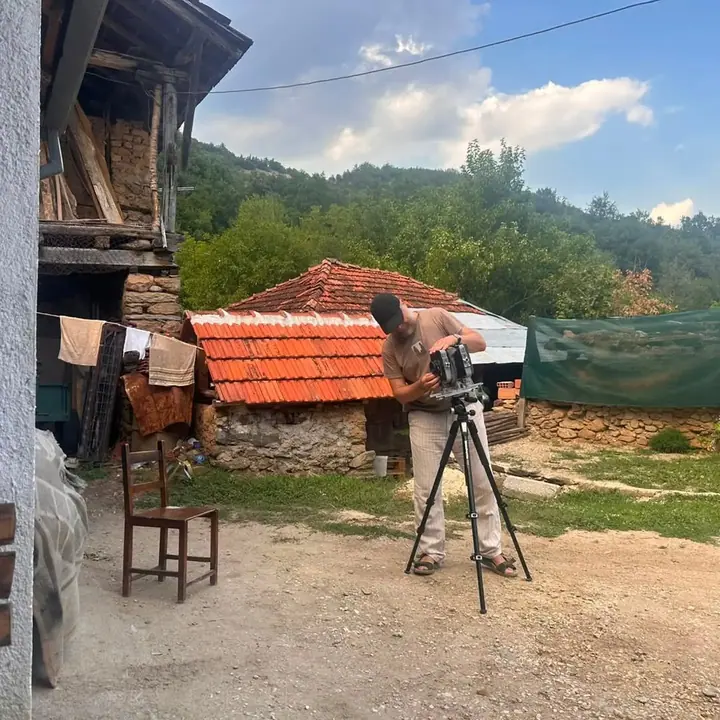
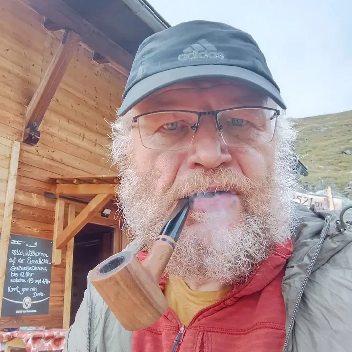
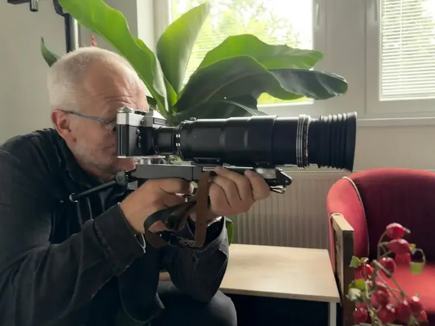
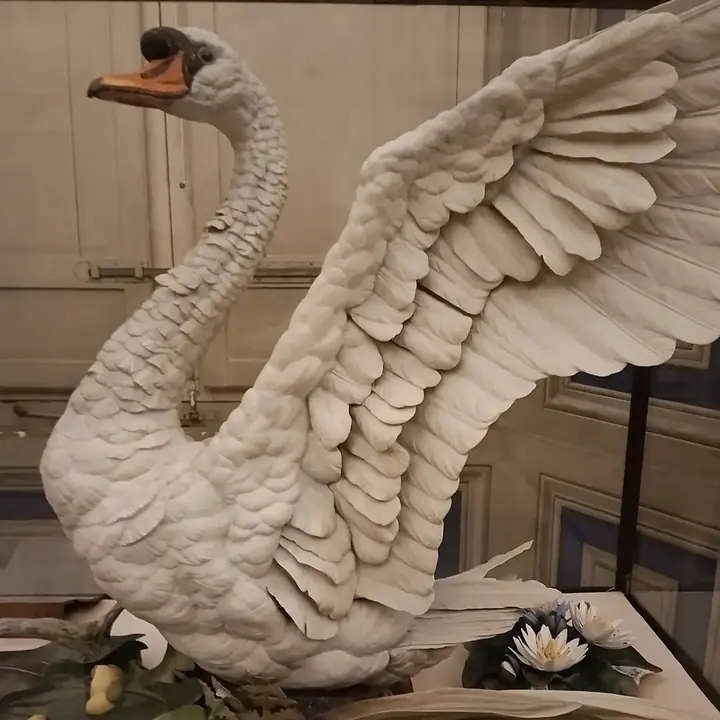

01 / 03
Portréty
Fotím portréty nadčasovými technikami, které obstály v čase. Portrétu se věnuji dlouhodobě a v roce 2016 jsem za něj získal 1. místo v Czech Press Photo.
Zeptat se na termín→






Portrét i produkt nadčasovými technikami
Zeptat se na termín →(01) Ahoj
Jmenuji se Šimon Pikous a v Liberci fotím portréty a produkty. Spoléhám na nadčasové techniky , protože kvalita fotky začíná u řemesla. Fotografii také učím na Liberecké škole fotografické , kterou jsem založil.
1 485lidí sleduje mou práci na Instagramu
252příspěvků s fotkami a příběhy
(02) Co fotím
01 / 03
Fotím portréty nadčasovými technikami, které obstály v čase. Portrétu se věnuji dlouhodobě a v roce 2016 jsem za něj získal 1. místo v Czech Press Photo.
Zeptat se na termín→02 / 03
Fotím produkty tak, aby obstály na webu, v katalogu i v tisku. Produktové fotografii jsem věnoval i knihu Praktický rádce produktového fotografa.
Zeptat se na termín→Dále nabízím
Založil jsem Libereckou školu fotografickou, kde učím. Pro školu i veřejnost připravuji učebnice, například Kompozice ve fotografii a Základy portrétní fotografie.
↗(04) Postup
Od první zprávy po hotovou galerii.
Krok 1 z 4
Napíšete mi na info@pikous.com nebo zavoláte. Řeknete mi, co potřebujete a k čemu fotky budou sloužit.
Krok 2 z 4
U portrétu se domluvíme na místě a náladě, u produktu na účelu fotek a stylu. Podle toho zvolím i techniku.
Krok 3 z 4
Fotím v klidu a s ohledem na detail. Pracuji s technikou, která se k zadání nejlépe hodí.
Krok 4 z 4
Fotky pečlivě vyberu a upravím. Termín předání si domluvíme předem podle rozsahu zakázky.
Portrét, který obstojí v čase.
(05) Za objektivem
Narodil jsem se v roce 1970 v Liberci a fotografem byl i můj otec Jan Pikous. Vystudoval jsem magisterský obor na Institutu tvůrčí fotografie Slezské univerzity v Opavě. Založil jsem Libereckou školu fotografickou a učím také na Střední škole oděvního designu v Liberci, na Slezské univerzitě v Opavě a na Technické univerzitě v Liberci.
Ve volné tvorbě mě inspiruje romantismus, dekadence i nová objektivita. Hodně se věnuji historii a mytologii severních Sudet a krajině, ze které pocházím. Vystavoval jsem mimo jiné v Severočeském muzeu a Oblastní galerii v Liberci, v Domě Gustava Mahlera v Jihlavě nebo v Zittau.
Za portrét jsem v roce 2016 získal 1. místo v Czech Press Photo a dvě mé portrétní fotografie se v roce 2020 dostaly do Top 25 na Imago v Mexiku. Stejnou péči dávám i zakázkám: portrétům a produktovým fotkám, u kterých sázím na techniky, které obstály v čase.
Šimon
Šimon Pikous · Portrétní a produktový fotograf
Ano, produktové fotografii se věnuji dlouhodobě a napsal jsem o ní i knihu Praktický rádce produktového fotografa. Napište mi, k čemu fotky potřebujete, a domluvíme se na podobě.
Pracuji i s klasickými fotoaparáty a postupy, které obstály v čase. Konkrétní techniku volím podle toho, co má portrét nebo produkt vyjádřit.
Cena záleží na rozsahu zadání. Napište mi, co potřebujete, a pošlu vám nabídku.
Ano, založil jsem Libereckou školu fotografickou, na které učím. Připravuji také učebnice, například Kompozice ve fotografii a Základy portrétní fotografie.
(07) Kontakt
Napište pár vět o tom, co si představujete, a termín, který se vám hodí.
info@pikous.com